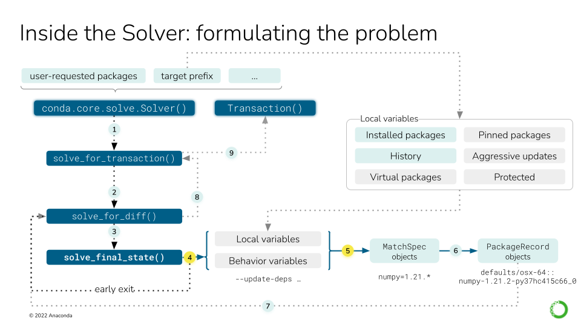
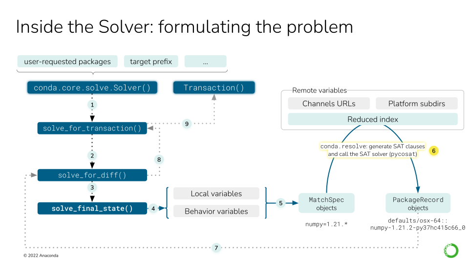
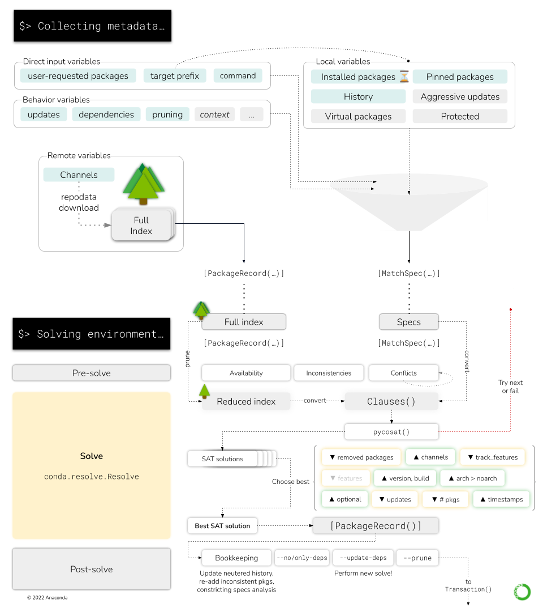

Solvers#
The guide conda install didn’t go into details of the solver black box. It did mention
the high-level Solver API and how conda expects a transaction out of it, but we never got to
learn what happens inside the solver itself. We only covered these three steps:
The details are complicated, but in essence, the solver will:
Express the requested packages, command line options and prefix state as
MatchSpecobjectsQuery the index for the best possible match that satisfy those constraints
Return a list of
PackageRecordobjects.
How do we transform the prefix state and configurations into a list of MatchSpec objects? How
are those turned into a list of PackageRecord objects? Where are those PackageRecord
objects coming from? We are going to cover these aspects in detail here.
MatchSpec vs PackageRecord#
First, let’s define what each object does:
PackageRecordobjects represent a concrete package tarball and its contents. They follow specific naming conventions and expose several fields. Inspect them directly in the class code.MatchSpecobjects are essentially a query language to findPackageRecordobjects. Internally,condawill translate your command line requests, likenumpy>=1.19,python=3.*orpytorch=1.8.*=*cuda*, into instances of this class. This query language has its own syntax and rules, detailed here. The most important fields of aMatchSpecobject are:name: the name of the package (e.g.pytorch); always expected.version: the version constraints (e.g.1.8.*); can be empty but ifbuildis set, set it to*to avoid issues with the.conda_build_form()method.build: the build string constraints (e.g.*cuda*); can be empty.
Create a MatchSpec object from a PackageRecord instance
You can create a MatchSpec object from a PackageRecord instance using the .to_match_spec()
method. This will create a MatchSpec object with its fields set to exactly match the originating
PackageRecord.
Note that there are two PackageRecord subclasses with extra fields, so we need to distinguish
between three types, all of them useful:
PackageRecord: A record as present in the index (channel).PackageCacheRecord: A record already extracted in the cache. Contains extra fields for the tarball path in disk and its extracted directory.PrefixRecord: A record installed in a prefix. Same as above, plus fields for the files that make the package and how they were linked in the prefix. It can also host information about whichMatchSpecstring resulted in this record being installed.
Remote state: the index#
So the solver takes MatchSpec objects, queries the index for the best match and returns
PackageRecord objects. Perfect. What’s the index? It’s the result of aggregating the
requested conda channels in a single entity. For more information, check
Fetching the index.
Local state: the prefix and context#
When you do conda install numpy, do you think the solver will just see something like
specs=[MatchSpec("numpy")]? Well, not that quick. The explicit instructions given by the user
are only one part of the request we will send to the solver. Other pieces of implicit state are
taken into account to build the final request. Namely, the state of your prefix. In total,
these are the ingredients of the solver request:
Packages already present in your environment, if you are not creating a new one. This is exposed through the
conda.core.prefix_data.PrefixDataclass, which provides an iterator method via.iter_records(). As we saw before, this yieldsconda.models.records.PrefixRecordobjects, aPackageRecordsubclass for installed records.Past actions you have performed in that environment; the History. This is a journal of all the
conda install|update|removecommands you have run in the past. In other words, the specs matched by those previous actions will receive extra protections in the solver.Packages included in the aggressive updates list. These packages are always included in any requests to make sure they stay up-to-date under all circumstances.
Packages pinned to a specific version, either via
pinned_packagesin your.condarcor defined in a$PREFIX/conda-meta/pinnedfile.In new environments, packages included in the
create_default_packageslist. These specs are injected in eachconda createcommand, so the solver will see them as explicitly requested by the user.And, finally, the specs the user is asking for. Sometimes this is explicit (e.g.
conda install numpy) and sometimes a bit implicit (e.g.conda update --allis telling the solver to add all installed packages to the update list).
All of those sources of information produce a number a of MatchSpec objects, which are then
combined and modified in very specific ways depending on the command line flags and their origin
(e.g. specs coming from the pinned packages won’t be modified, unless the user asks for it
explicitly). This logic is intricate and will be covered in the next sections. A more technical
description is also available in 技术规范：求解器状态.

Local variables affect the solving process explicitly and implicitly. As seen in
in the conda install deep dive, the main actor is the
conda.core.solve.Solver class. Before invoking the SAT solver, we can describe nine steps:#
Instantiate the
Solverclass with the user-requested packages and the active environment (target prefix)Call the
solve_for_transaction()method on the instance, which callssolve_for_diff().Call
solve_final_state(), which takes some more arguments from the CLI.Under some circumstances, we can return early (e.g. the packages are already installed).
If we didn’t return early, we collect all the local variables into a list of
MatchSpecobjects.
For steps six to nine, see this figure.

The remote variables in a solve refer to, essentially, the package index (channels). This figure describes nine steps, focusing on 6-9. For steps 1-5, see the previous figure.#
All the channels need to be fetched by now, but they have to be aggregated and reduced so the solver only handles the relevant bits. This step transforms “channels” into a list of available
PackageRecordobjects.This is where the SAT solver will act. It will use the list of
MatchSpecobjects to pick a number ofPackageRecordentries from the index, thus building the “final state of the solved environment”. This is detailed later in this deep dive guide, if you need more info.solve_for_difftakes the final state and compares it to the initial state, generating the differences between them (e.g. package A was updated to version 1.2, package B was removed).solve_for_transactiontakes the diff and some more metadata in the instance to generate theTransactionobject.
The high-level logic in conda.cli.install#
The full solver logic does not start at the conda.core.solve.Solver API, but before that, all the
way up in the conda.cli.install module. Here, some important decisions are already made:
Whether the solver is not needed at all because:
The operation is an explicit package install
The user requested to roll back to a history checkpoint
We are just creating a copy of an existing environment (cloning)
Which
repodatasource to use (see here). It not only depends on the current configuration (via.condarcor command line flags), but also on the value ofuse_only_tar_bz2.Whether the solver should start by freezing all installed packages (default for
conda installandconda removein existing environments).If the solver does not find a solution, whether we need to retry again without freezing the installed packages for the current
repodatavariant or if we should try with the next one.
So, roughly, the global logic there follows this pseudocode:
if operation in (explicit, rollback, clone):
transaction = handle_without_solver()
else:
repodatas = from_config or ("current_repodata.json", "repodata.json")
freeze = (is_install or is_remove) and env_exists and update_modifier not in argv
for repodata in repodatas:
try:
transaction = solve_for_transaction(...)
except:
if repodata is last:
raise
elif freeze:
transaction = solve_for_transaction(freeze_installed=False)
else:
continue # try next repodata
handle_txn(transaction)
Check this other figure for a schematic representation of this pseudocode.
We have, then, two reasons to re-run the full solver logic:
Freezing the installed packages didn’t work, so we try without freezing again.
Using
current_repodatadid not work, so we try with fullrepodata.
These two strategies are stacked so in the end, before eventually failing, we will have tried four things:
Solve with
current_repodata.jsonandfreeze_installed=TrueSolve with
current_repodata.jsonandfreeze_installed=FalseSolve with
repodata.jsonandfreeze_installed=TrueSolve with
repodata.jsonandfreeze_installed=False
Interestingly, those strategies are designed to improve conda’s average performance, but they
should be seen as a risky bet. Those attempts can get expensive!
How to ask for a simpler approach
If you want to try the full thing without checking whether the optimized solves work, you can
override the default behaviour with these flags in your conda install commands:
--repodata-fn=repodata.json: do not usecurrent_repodata.json--update-specs: do not try to freeze installed
Then, the Solver class has its own internal logic, which also features some retry loops. This
will be discussed later and summarized.
Early exit tasks#
Some tasks do not involve the solver at all. Let’s enumerate them:
Explicit package installs: no index or prefix state needed.
Cloning an environment: the index might be needed if the cache has been cleared.
History rollback: currently broken.
Forced removal: prefix state needed. This happens in the
Solverclass.Skip solve if already satisfied: prefix state needed. This happens in the
Solverclass.
Explicit package installs#
These commands do not need a solver because the requested packages are expressed with a direct
URL or path to a specific tarball. Instead of a MatchSpec, we already have a
PackageRecord-like entity! For this to work, all the requested packages neeed to be URLs or paths.
They can be typed in the command line or in a text file including a @EXPLICIT line.
Since the solver is not involved, the dependencies of the explicit package(s) are not processed
at all. This can leave the environment in an inconsistent state, which can be fixed by
running conda update --all, for example.
Explicit installs are taken care of by the explicit function.
Cloning an environment#
conda create has a --clone flag that allows you to create a fully-working copy of an
existing environment. This is needed because you cannot relocate an environment using cp,
mv, or your favorite file manager without unintended consequences. Some files in a conda
environment might contain hardcoded paths to existing files in the original location, and
those references will break if cp or mv is utilized (conda environments can be renamed
via the conda rename command, however; see the following section for more information).
The clone_env function implements this functionality. It essentially
takes the source environment, generates the URLs for each installed packages (filtering
conda, conda-env and their dependencies) and passes the list of URLs to explicit(). If
the source tarballs are not in the cache anymore, it will query the index for the best possible
match for the current channels. As such, there’s a slim chance that the copy is not exactly a clone
of the original environment.
Renaming an environment#
When the conda rename command is used to rename an already-existing environment, please keep in
mind that the solver is not invoked at all, since the command essentially does a conda create --clone
and conda remove --all of the environment.
History rollback#
conda install has a --revision flag, which allows you to revert the state of the environment
to a previous one. This is done through the History file, but its
current implementation can be considered broken. Once fixed,
we will cover it in detail.
Forced removals#
Similar to explicit installs, you can remove a package without performing a full solve. If
conda remove is invoked with --force, the specified package(s) will be removed directly, without
analyzing their dependency tree and pruning the orphans. This can only happen after querying the
active prefix for the installed packages, so it is handled
in the Solver class. This part of the logic returns the list of PackageRecord objects
already found in the PrefixData list after filtering out the ones that should be removed.
Skip solve if already satisfied#
conda install and update have a rather obscure flag: -S, --satisfied-skip-solve:
Exit early and do not run the solver if the requested specs are satisfied. Also skips aggressive updates as configured by ‘aggressive_update_packages’. Similar to the default behavior of ‘pip install’.
This is also implemented at the Solver level,
because we also need a PrefixData instance. It essentially checks if all of the passed MatchSpec
objects can match a PackageRecord already in prefix. If that’s the case, we return the installed
state as-is. If not, we proceed for the full solve.
Details of Solver.solve_final_state()#
Note
From here on, the document only covers the classic solver logic (which uses pycosat). The libmamba solver has
a different approach and is not documented here. Please refer to
its documentation for more information.
This is where most of the intricacies of the conda logic are defined. In this step, the
configuration, command line flags, user-requested specs and prefix state are aggregated to query
the current index for the best match.
The aggregation of all those state bits will result in a list of MatchSpec objects. While it’s
easy to establish which package names will make it to the list, deciding which version and build
string constraints the specs carry is a bit more involved.
This is currently implemented in the conda.core.solve.Solver class. Its main goal is to
populate the specs_map dictionary, which maps package names (str) to MatchSpec objects.
This happens at the beginning of the .solve_final_state() method. The full details of the
specs_map population are covered in the
solver state technical specification, but here’s a little
map of what submethods are involved:
Initialization of the
SolverStateContainer: Often abbreviated asssc, it’s a helper class to store some state across attempts (remember there are several retry loops). Most importantly, it stores two key attributes (among others):specs_map: same as above. This is where it lives across solver attempts.solution_precs: a list ofPackageRecordobjects. It stores the solution returned by the SAT solver. It’s always initialized to reflect the installed packages in the target prefix.
Solver._collect_all_metadata(): Initializes thespecs_mapwith the specs found in the history or with the specs corresponding to the installed records. This method delegates toSolver._prepare(). This initializes the index by fetching the channels and reducing it. Then, aconda.resolve.Resolveinstance is created with that index. The index is stored in theSolverinstance as._indexand theResolveobject as._r. They are also kept around in theSolverStateContainer, but as public attributes:.indexand.r, respectively.Solver._remove_specs(): Ifconda removewas called, it removes the relevant specs fromspecs_map.Solver._add_specs(): For all the othercondacommands (create,install,update), it adds (or modifies) the relevant specs tospecs_map. This is one of the most complicated pieces of logic in the class!
Check the other parts of the Solver API
You can check the rest of the Solver API here.
At this point, the specs_map is adequately populated and we can call the SAT solver wrapped by
the conda.resolve.Resolve class. This is done in Solver._run_sat(), but this method does some
other things before actually solving the SAT problem:
Before calling
._run_sat(), inconsistency analysis is performed viaSolver._find_inconsistent_packages. This will preemptively remove certainPackageRecordobjects fromssc.solution_precsifResolve.bad_installed()determined they were causing inconsistencies. This actually runs a series of small solves to check that the installed records form a satisfiable set of clauses. Those that prevent that solution from being found are annotated as such and ignored during the real solve later.Make sure the requested package names are available in the index.
Anticipate and minimize potentially conflicting specs. This happens in a
whileloop fed byResolve.get_conflicting_specs(). If a spec is found to be conflicting, it is neutered: a newMatchSpecobject is created, but without version and build string constrains (e.g.numpy >=1.19becomes justnumpy). Then,Resolve.get_conflicting_specs()is called again, and the loop continues until convergence: the list of conflicts cannot be reduced further, either because there are no conflicts left or because the existing conflicts cannot be resolved by constraint relaxation.Now, the SAT solver is called. This happens via
Resolve.solve(). More on this below.If the solver failed, then
UnsatisfiableErroris raised. Depending on which attempt we are on,condawill try again with non-frozen installed packages or a different repodata, or it will give up and analyze the conflict cause core. This will be detailed later.If the solver succeeded, some bookkeeping needs to be done:
Neutered specs that happened to be in the history are annotated as such.
Inconsistent packages are added back to the solution, including potential orphans.
Constraint analysis is run via
Solver.get_constrained_packages()andSolver.determine_constricting_specs()to help the user understand why some packages were not updated.
We are not done yet, though. After Solver._run_sat(), we still need to run the post-solver logic!
After the solve, the final list of PackageRecord objects might still change if certain modifiers
are set. This is handled in the Solver._post_sat_handling():
--no-deps(DepsModifier.NO_DEPS): Remove dependencies of the explicitly requested packages from the final solution.--only-deps(DepsModifier.ONLY_DEPS): Remove explicitly requested packages from the final solution but leave their dependencies. This is done viaPrefixGraph.remove_youngest_descendant_nodes_with_specs().--update-deps(UpdateModifier.UPDATE_DEPS): This is the most interesting one. It actually runs a second solve (!) where the user-requested specs are the originally requested specs plus their (now determined) dependencies.--prune: Removes orphan packages from the solution.
The Solver also checks for Conda updates
Interestingly, the Solver API is also responsible of checking if new conda versions are available
in the configured channels. This is done here to take advantage of the fact that the index has been
already built for the rest of the class.
Details of conda.resolve.Resolve#
This is the class that actually wraps the SAT solver. conda.core.solve.Solver is a higher level
API that configures the solver request and prepares the transaction. The actual solution is
computed in this other module we are discussing now.
The Resolve object will mostly receive two arguments:
The fetched
index, as processed byconda.index.get_index().The configured
channels, so channel priority can be sorted out.
It will also hold certain states:
The
indexwill be grouped by name under a.groupsdictionary (str,[PackageRecord]). Each group is later sorted so newer packages are listed first, helping reduce the index better.Another dictionary of
PackageRecordgroups will be created, keyed by theirtrack_featuresentries, under the.trackersattribute.Some other dictionaries are initialized as caches.
The main methods in this class are:
bad_installed(): This method uses a series of small solves to check if the installed packages are in a consistent state. In other words, if all thePackageRecordentries were expressed asMatchSpecobjects, would the environment be solvable?get_reduced_index(): This method takes a full index and trims out the parts that are not necessary for the current request, thus reducing the solution space and speeding up the solver.gen_clauses(): This instantiates and configures theClausesobject, which is the real SAT solver wrapper. More on this later.solve(): The main method in theResolveclass. It will be discussed in the next section.find_conflicts(): If the solver didn’t succeed, this method performs a conflict analysis to find the most plausible explanation for the current conflicts. It essentially relies onbuild_conflict_map()to “find the common dependencies that might be the cause of conflicts”.condacan spend a lot of time in this method.
Disabling conflict analysis
Conflict analysis can be disabled through the context.unsatisfiable_hints options, but
unfortunately that gets in the way of conda’s iterative logic. It will shortcut early in the chain
of attempts and prevent the solver from trying less constrained specs. This is a part of the logic
that should be improved.
Resolve.solve()#
As introduced above, this is the main method in the Resolve class. It will perform the following
actions:
Reduce the index via
get_reduced_index. If unsuccessful, try to detect if packages are missing or the wrong version was requested. We can raise early to trigger a new attempt inconda.cli.install(remember, unfrozen or next repodata) or, if it’s the last attempt, we go straight tofind_conflicts()to understand what’s wrong.Instantiate a new
Resolveobject with the reduced index to generate theClausesobject viagen_clauses(). This method relies onpush_MatchSpec()to turn theMatchSpecobject into an SAT clause inside theClausesobject (referred to asC).Run
Clauses.sat()to solve the SAT problem. If a solution cannot be found, deal with the error in the usual way: raise early to trigger another attempt or callfind_conflicts()to try explaining why.If no errors are found, then we have one or more solutions available, and we need to post-process them to find the best one. This is done in several steps:
Minimize the amount of removed packages. The SAT clauses are generated via
Resolve.generate_removal_count()and thenClauses.minimize()will use it to optimize the current solution.Maximize how well each record in the solution matches the spec. The SAT clauses are now generated in
Resolve.generate_version_metrics(). This returns five sets of clauses: channel, version, build, arch or noarch, and timestamp. At this point, only channels and versions are optimized.Minimize the number of records with
track_featureentries. SAT clauses are coming fromResolve.generate_feature_count().Minimize the number of records with
featuresentries. SAT clauses are coming fromResolve.generate_feature_metric().Now, we continue the work started at (2). We will maximize the build number and choose arch-specific packages over noarch variants.
We also want to include as many optional specs in the solution as possible. Optimize for that thanks to the clauses generated by
Resolve.generate_install_count().At the same time, we will minimize the number of necessary updates if keeping the installed versions also satisfies the request. Clauses generated with
Resolve.generate_update_count().Steps (2) and (5) are also applied to indirect dependencies.
Minimize the number of packages in the solution. This is done by removing unnecessary packages.
Finally, maximize timestamps until convergence so the most recent packages are preferred.
At this point, the SAT solution indices can be translated back to SAT names. This is done in the
clean()local function you can find inResolve.sat().There’s a chance we can find alternate solutions for the problem, and this is explored now, but eventually only the first one will be returned while translating the SAT names to
PackageRecordobjects.
The Clauses object wraps the SAT solver using several layers#
The Resolve class exposes the solving logic, but when it comes to interacting with the SAT solver
engine, that’s done through the Clauses object tree. And we say “tree” because the actual engines
are wrapped in several layers:
Resolvegeneratesconda.common.logic.Clausesobjects as needed.Clausesis a tight wrapper around its privateconda.common._logic.Clausescounterpart. Let’s call the former_Clauses. It simply wraps the_ClausesAPI with._eval()calls and other shortcuts for convenience._Clausesprovides an API to process the raw SAT formulas or clauses. It will wrap one of theconda.common._logic._SatSolversubclasses. These are the ones that wrap the SAT solver engines! So far, there are three subclasses, selectable via thecontext.sat_solversetting:_PycoSatSolver, keyed aspycosat. This is the default one, a Python wrapper around thepicosatproject._PySatSolver, keyed aspysat. Uses theGlucose4solver found in thepysatproject._PyCryptoSatSolver, keyed aspycryptosat. Uses the Python bindings for the CryptoMiniSat project.
In principle, more SAT solvers can be added to conda if a wrapper that subscribes to the
_SatSolver API is used. However, if the reason is choosing a better performing engine, consider
the following:
The wrapped SAT solvers are already using compiled languages.
Generating the clauses is indeed written in pure Python and has a non-trivial overhead.
Optimization tricks like reducing the index and constraining the solution space have their costs if the “bets” were not successful.
More about SAT solvers in general
This guide did not cover the details of what SAT solvers are or do. If you want to read about them, consider checking the following resources:
Aaron Meurer’s slides about Conda internals. These slides reveal a lot of details of
condaback in 2015. Some things have changed, but the core SAT solver behaviour is still well explained there.All the talks regarding solvers from Packaging-Con 2021. Check which talks belong to the Solvers track and enjoy!

Here you can see how the high level Solver API interacts with the low-level Resolve and Clauses objects.#
The Collecting metadata step in the CLI report only compiles the necessary information from the CLI arguments, the prefix state and the chosen channels, presenting the SAT solver adapters with two critical pieces of information:
The list of
MatchSpecobjects (“what the user wants in this environment”)The list of
PackageRecordobjects (“the packages available in the channels”)
So, in essence, the SAT solver takes the MatchSpec objects to select which PackageRecord objects
satisfy the user request in the best way. The necessary computations are part of the “Solving
environment…” step in the CLI report.